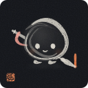
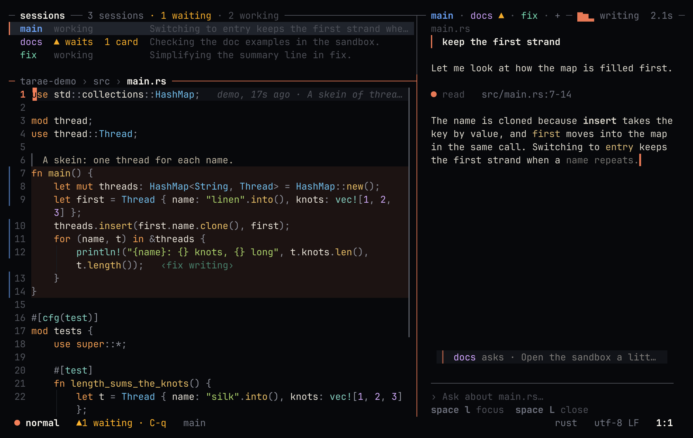

t a r a e
A terminal editor with Claude inside.
Helix's keys · Claude's commands sandboxed · sessions side by side
Never waits — LSP, parsing, git and disk stay off the key path. A frame in under 16 ms.
Review like a pull request — hunk by hunk, or at the turn's end. A second Claude reviews too.
Claude as a verb — select, space i, say it. Review the diff.
The web as text — :web <url> reads a page as its markdown, a buffer like code: gd follows a link. Claude reads pages through the same gate as its commands.
Sandboxed by default — Claude's commands run confined: Seatbelt, or Landlock and seccomp. The network goes through tarae.
Helix's keys — the same keymap and command names (coming from Helix).
Sessions side by side — a checkout, a Claude and a terminal each. See where each Claude reads and writes, and what would conflict, as it happens; :weave shows a file as they all merge. Bring them back.
Sessions side by side — one checkout per Claude, and you see where they would collide.
Plugins in Rust — sandboxed WebAssembly. Kubernetes beside your manifests.
The real thing
Recorded from tarae itself: three Claudes on one repository.

Install
git clone https://github.com/tarae-sh/tarae && cd tarae
cargo install --path .
tarae .macOS or Linux (WSL on Windows), with rustup and a C compiler. Claude features need Claude Code logged in. space ? finds any command; :tutor teaches the keys.
Docs
Features · Claude · Threat model · Web pages · Configuration · Languages · Plugins · Keymap · Architecture · Roadmap